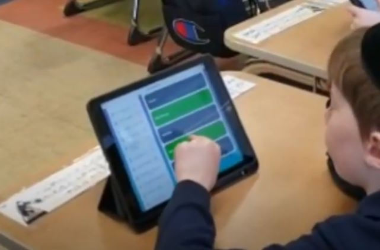
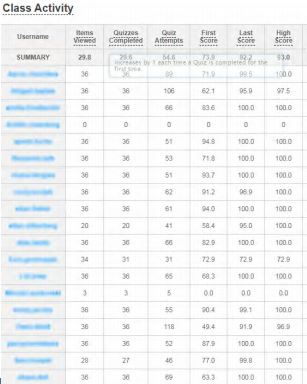
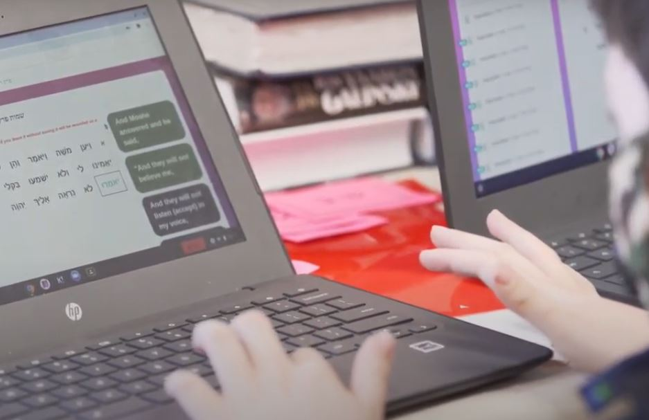
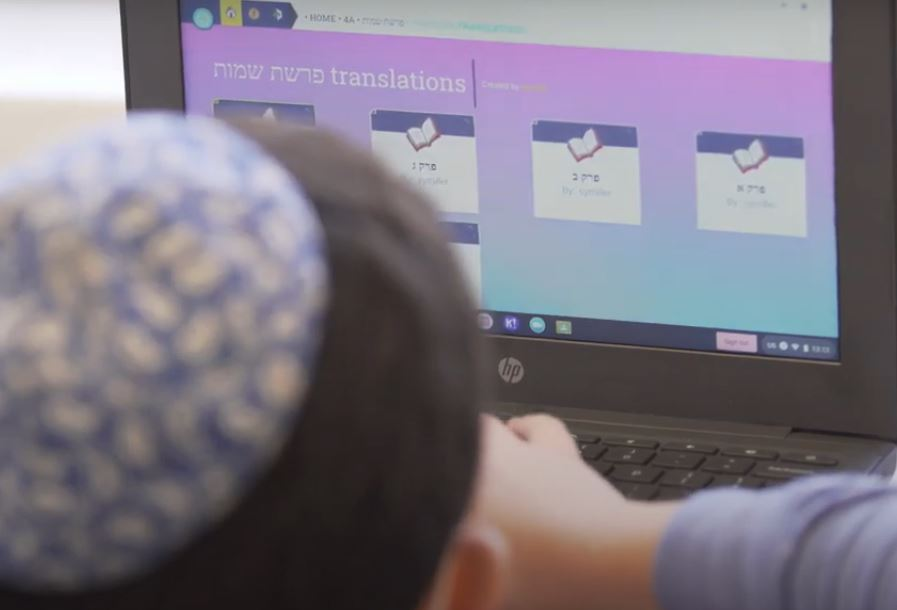

Examples and Further Resources
for Blended and Personalized Learning
Examples of Blended and Personalized Learning
in Limudei Kodesh

Station Rotation
Chavrusa Reading

Kriah practice
Skill Building Formative or Summative Assessments
Deeper Knowledge of the Text
Self-Paced Class
Online Resources on Blended and Personalized Learning
Dr. Catlin R. Tucker's Website (catlintucker.com)
Dr. Tucker is a noted expert on Blended and Personalized Learning. Her site contains resources for BPL, including her blog with articles.
BetterLesson (blog.betterlesson.com)
BetterLesson's site has a large amount of resources for teaching. Their blog contains articles on Blended and Personalized Learning and many other subjects in the field of education.
The International Society for Technology in Education (iste.org)
ISTE supports the use of technology to enhance teaching and learning and has many resources on Blended and Personalized Learning.
Edutopia (edutopia.org/topic/blended-learning)
Edutopia is a popular website with many resources on many topics in education, including Blended Learning.